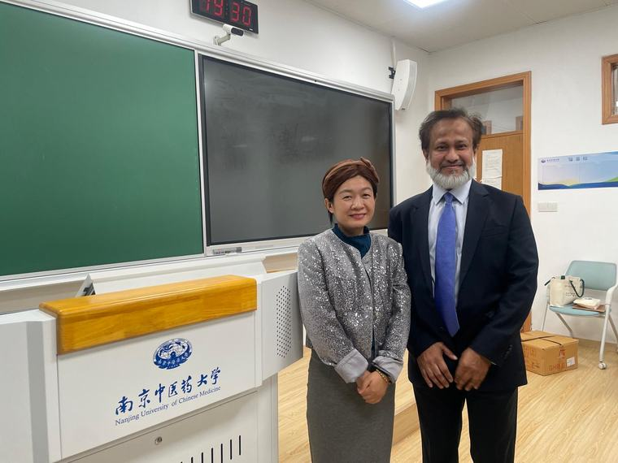
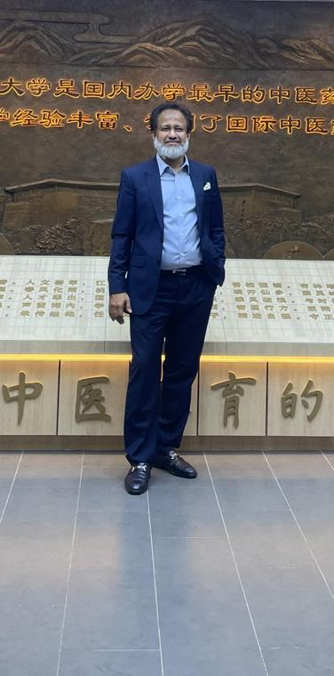
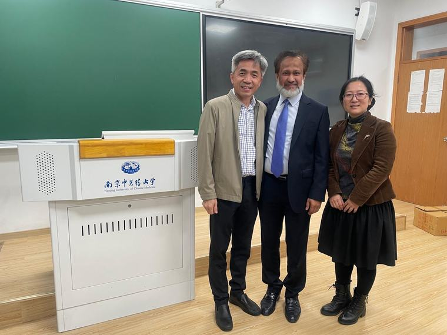
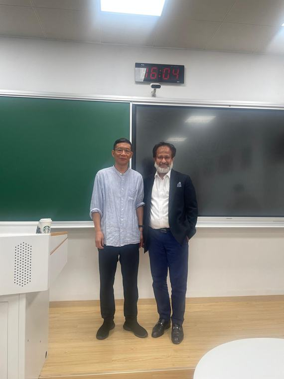
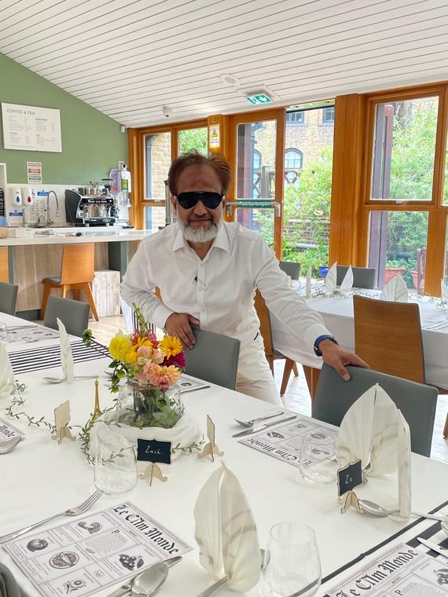
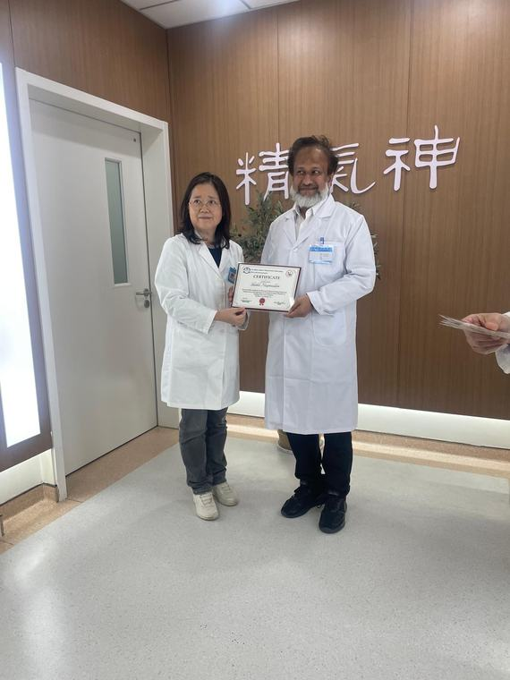
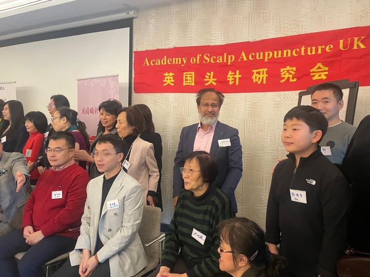
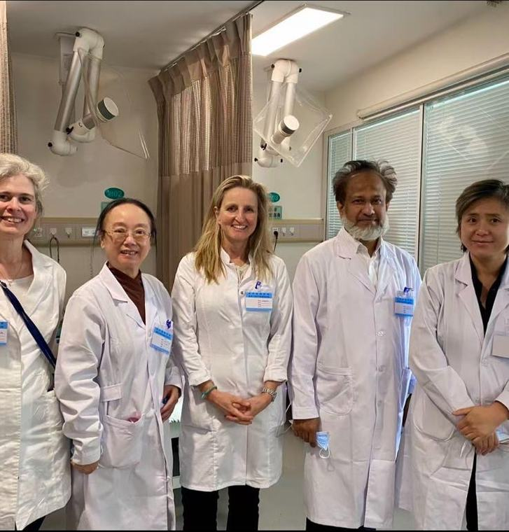
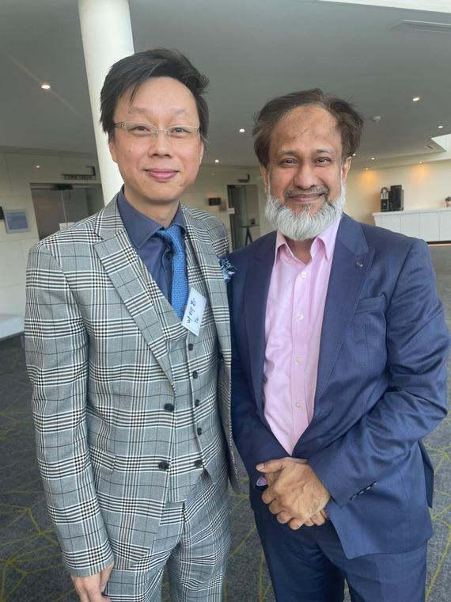
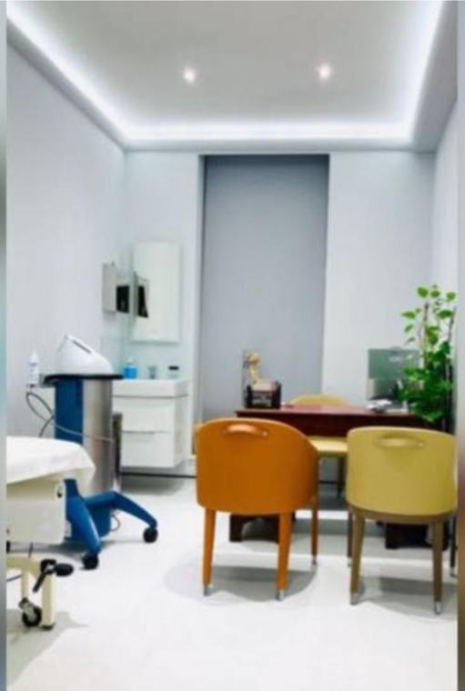

“I can definitely say that it's been life-changing treatment.”
After a C6–C7 spinal injury left his right arm paralysed, this patient was treated by Nizam over five to six months. Today he has regained function and strength in his hand and arm.
Patient stories, lectures and moments from Nizam's work in London and abroad
After a C6–C7 spinal injury left his right arm paralysed, this patient was treated by Nizam over five to six months. Today he has regained function and strength in his hand and arm.
Lectures, ceremonies and time spent with fellow practitioners in the UK and China














